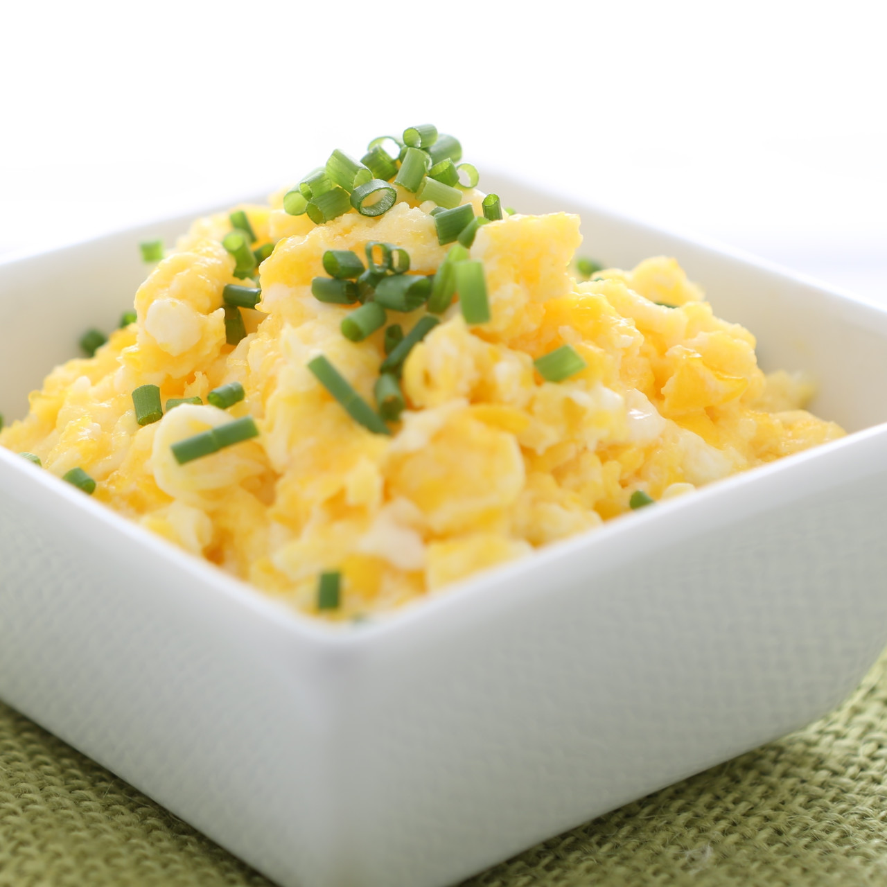

Perfect Scrambled Edds

These eggs are egg-ceptional! REALLY.
Just a few ingredients and simple techniques take this standard dish from meh to yum.
Ingredients
- 6 eggs cracked into a bowl
- 2 tbsp salted butter, seperated
- 1/8 cup grated parmesan
- 1/4 cup shredded italian cheese blend
- chopped chives
- 1 tsp white pepper
- 1 tsp black pepper
- 1 tsp love
Steps
- Over medium heat, coat bottom of large skillet with 1tbsp butter. Melt.
- Whisk eggs, parmesan, pepper, love, and cheese blend together.
- Once combined and eggs are emulsified with the mix-ins, pour into buttery skillet and add the butter in.
- Slowly stir with spatula as the eggs solidify. Just relax and push eggs away from the pan as soon as a thumbsize portion is cooked.
- The eggs should retain moisture but not be runny, ideally. Be careful not to let the eggs brown.
- Once the eggs are cooked to your satisfaction, sprinkle with chive and plate. Bone apple tea!